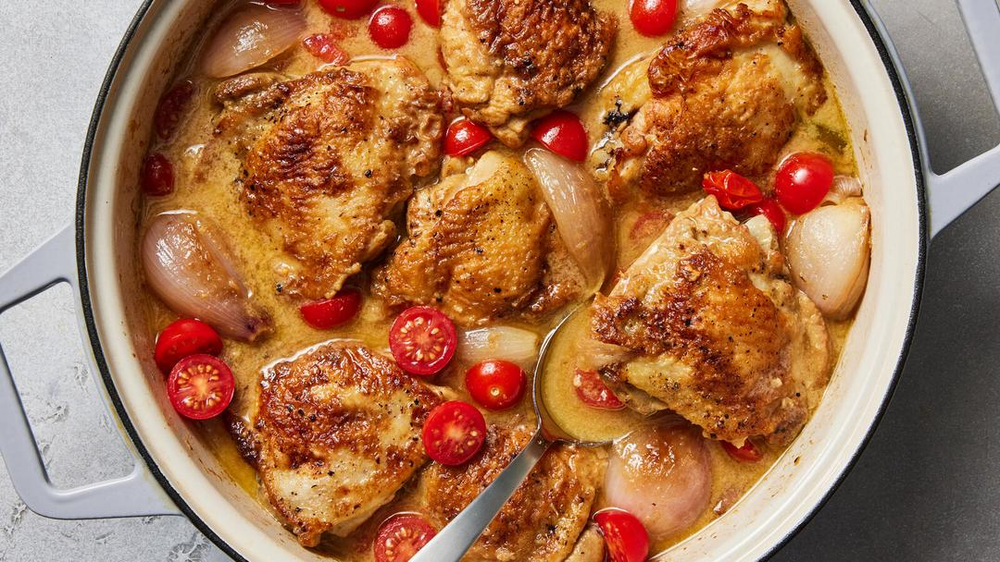

Rishia Zimmern’s Chicken With Shallots

Servings: 6 servings
Total Time: 1 hour 30 minutes
Ingredients
- 8 bone-in, skin-on chicken thighs
- 2 tablespoons all-purpose flour
- 1 tablespoon kosher salt
- 1 tablespoon black pepper
- 2 tablespoons unsalted butter
- 12 to 15 whole medium shallots, peeled
- 2 cups white wine
- 2 tablespoons Dijon mustard
- 2 tarragon sprigs
- 2 cups cherry tomatoes, halved
Directions
- 1 Pat the chicken thighs very dry with paper towels. Sprinkle the flour, salt and pepper over the chicken. 2 Melt the butter in a large, heavy-bottomed pot or skillet set over medium-high heat. When the butter foams, cook the chicken, in batches if necessary, until well browned and crisp on all sides. Set aside. 3 Add the whole shallots to the pot and sauté them in the butter and chicken fat until they begin to soften and caramelize, about 10 to 12 minutes. Add the wine to deglaze the pot, stir with a large spoon, then add the mustard and tarragon, then the chicken thighs. Cover the pot, turn the heat to low and simmer for 30 minutes. 4 Remove the lid, and allow the sauce to reduce and thicken, 15 to 20 minutes. 5 Add the cherry tomatoes to the pot, stir lightly to combine and serve immediately.